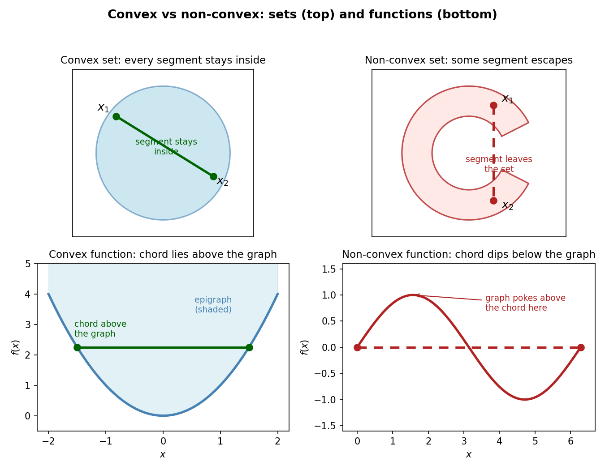

12. Convex sets and convex functions
Chapter 10 ended with a promise and a warning: gradient descent reliably finds local minima, but a wiggly function has many valleys and the deepest one may stay invisible (§10.9). Chapter 11 added a second promise: projected gradient descent converges when the constraint set is “nice” (§11.8). This chapter cashes both cheques. The nice sets are convex sets; the nice functions are convex functions — the single class for which every local minimum is automatically a global minimum.
12.1 Convex sets: the line-segment test
Def. A set \(S \subseteq \mathbb{R}^d\) is convex = for every pair \(\mathbf{x}_1, \mathbf{x}_2 \in S\) and every \(\lambda \in [0, 1]\), \[\lambda \mathbf{x}_1 + (1 - \lambda)\mathbf{x}_2 \in S.\] The point \(\lambda \mathbf{x}_1 + (1 - \lambda)\mathbf{x}_2\) slides along the line segment joining \(\mathbf{x}_1\) to \(\mathbf{x}_2\) as \(\lambda\) moves from \(1\) to \(0\) (\(\lambda = 1\) gives \(\mathbf{x}_1\), \(\lambda = 0\) gives \(\mathbf{x}_2\), \(\lambda = \tfrac{1}{2}\) gives the midpoint). Convexity says: pick any two points of the set — the whole segment between them never leaves the set.
- In \(\mathbb{R}\), the convex sets are exactly the intervals \([a, b]\) (with \(a = -\infty\) or \(b = +\infty\) allowed). A union of two disjoint intervals, like \([a, b] \cup [c, d]\) with \(b < c\), fails: pick one point from each interval and the segment between them crosses the gap.
- The empty set and all of \(\mathbb{R}^d\) are convex (the condition holds vacuously / trivially).
- To disprove convexity you need only one bad pair: two points in \(S\) and one \(\lambda \in [0, 1]\) whose mixture escapes \(S\). To prove it you must handle every pair and every \(\lambda\).
Basically, … A convex set has no dents, no holes, no separate pieces. If you and a friend both stand inside it, you can walk to each other in a straight line without ever stepping outside.
12.2 Examples and non-examples, with verdicts
Convex. - Intervals on the line (§12.1). - Euclidean balls \(B = \{\mathbf{x} : \lVert\mathbf{x}\rVert \le \theta\}\) — the disk, the solid sphere, and their higher-dimensional cousins (eg 4 proves it). - Boxes \([a_1, b_1] \times \cdots \times [a_d, b_d]\). - Half-spaces \(\{\mathbf{x} : \mathbf{w}^T\mathbf{x} \le b\}\) and hyperplanes \(\{\mathbf{x} : \mathbf{w}^T\mathbf{x} = b\}\) — eg 2 and eg 3 prove these. - The feasible sets from Chapter 11: \(\{x : x \le 2\}\) (a half-space), \(\{x_1^2 + x_2^2 \le R^2\}\) (a ball), and \(\{\mathbf{x} : A\mathbf{x} = \mathbf{b}\}\) (eg 5).
Not convex. - The union of two disjoint intervals \([0, 1] \cup [2, 3]\) — the segment from \(1\) to \(2\) crosses the gap. - The unit circle \(\{\mathbf{x} : \lVert\mathbf{x}\rVert = 1\}\) in \(\mathbb{R}^2\) (the boundary only): the midpoint of \((1, 0)\) and \((-1, 0)\) is \((0,0)\), which is not on the circle. - An annulus (donut) \(\{1 \le \lVert\mathbf{x}\rVert \le 2\}\) — the hole swallows segments. - A crescent / moon shape — two points on the horns join across the missing bite (top-right panel of the figure below).

eg 1 — an interval is convex (full steps). Let \(S = [a, b]\), \(\mathbf{x}_1, \mathbf{x}_2 \in [a, b]\), \(\lambda \in [0, 1]\). Then \[\lambda x_1 + (1-\lambda)x_2 \ge \lambda a + (1-\lambda)a = a, \qquad \lambda x_1 + (1-\lambda)x_2 \le \lambda b + (1-\lambda)b = b,\] so the mixture lies in \([a, b]\). Verdict: convex. ✓
12.3 Hyperplanes and half-spaces are convex
These two appear constantly in ML (linear classifiers, linear constraints), so they get their own proofs — both straight from the definition.
eg 2 — a hyperplane is convex (full steps). Let \(S = \{\mathbf{x} : \mathbf{w}^T\mathbf{x} = b\}\) for fixed \(\mathbf{w}, b\).
- Take \(\mathbf{x}_1, \mathbf{x}_2 \in S\), so \(\mathbf{w}^T\mathbf{x}_1 = b\) and \(\mathbf{w}^T\mathbf{x}_2 = b\). Take any \(\lambda \in [0, 1]\).
- \(\mathbf{w}^T(\lambda\mathbf{x}_1 + (1-\lambda)\mathbf{x}_2) = \lambda\,\mathbf{w}^T\mathbf{x}_1 + (1-\lambda)\,\mathbf{w}^T\mathbf{x}_2 = \lambda b + (1-\lambda)b = b\).
- So the mixture satisfies the defining equation: it lies in \(S\). Verdict: convex. ✓
eg 3 — a half-space is convex (full steps). Let \(S = \{\mathbf{x} : \mathbf{w}^T\mathbf{x} \le b\}\).
- Take \(\mathbf{x}_1, \mathbf{x}_2 \in S\), so \(\mathbf{w}^T\mathbf{x}_1 \le b\) and \(\mathbf{w}^T\mathbf{x}_2 \le b\). Take any \(\lambda \in [0, 1]\).
- \(\mathbf{w}^T(\lambda\mathbf{x}_1 + (1-\lambda)\mathbf{x}_2) = \lambda\,\mathbf{w}^T\mathbf{x}_1 + (1-\lambda)\,\mathbf{w}^T\mathbf{x}_2 \le \lambda b + (1-\lambda)b = b\) — the inequality survives because \(\lambda \ge 0\) and \(1 - \lambda \ge 0\).
- So the mixture lies in \(S\). Verdict: convex. ✓
eg 4 — a Euclidean ball is convex (full steps). Let \(B = \{\mathbf{x} : \lVert\mathbf{x}\rVert \le \theta\}\).
- Take \(\mathbf{x}_1, \mathbf{x}_2 \in B\), so \(\lVert\mathbf{x}_1\rVert \le \theta\), \(\lVert\mathbf{x}_2\rVert \le \theta\). Take any \(\lambda \in [0, 1]\).
- \(\lVert\lambda\mathbf{x}_1 + (1-\lambda)\mathbf{x}_2\rVert \le \lVert\lambda\mathbf{x}_1\rVert + \lVert(1-\lambda)\mathbf{x}_2\rVert\) (triangle inequality) \(= \lambda\lVert\mathbf{x}_1\rVert + (1-\lambda)\lVert\mathbf{x}_2\rVert\) (homogeneity, \(\lambda \ge 0\)) \(\le \lambda\theta + (1-\lambda)\theta = \theta\).
- So the mixture lies in \(B\). Verdict: convex. ✓
Basically, … A hyperplane is flat — of course a segment between two points on it stays on it. A half-space is “one side of a flat wall”, and averaging two points on the same side can’t push you through the wall. A ball is round with no dents, so the straight path between two inside points stays inside.
12.4 The intersection property: convexity survives \(\cap\)
Theorem. If \(S_1, S_2 \subseteq \mathbb{R}^d\) are convex, so is \(S_1 \cap S_2\).
Proof. Take \(\mathbf{x}_1, \mathbf{x}_2 \in S_1 \cap S_2\) and \(\lambda \in [0, 1]\). Then \(\mathbf{x}_1, \mathbf{x}_2\) lie in \(S_1\), so \(\lambda\mathbf{x}_1 + (1-\lambda)\mathbf{x}_2 \in S_1\) by convexity of \(S_1\); the same argument puts it in \(S_2\). Belonging to both, it belongs to the intersection. ∎
Note: This is a workhorse: whenever a set looks complicated, try writing it as an intersection of simple convex sets you already trust.
eg 5 — solutions of \(A\mathbf{x} = \mathbf{b}\) are convex (full steps). Let \(S = \{\mathbf{x} : A\mathbf{x} = \mathbf{b}\}\) with \(A\) an \(m \times d\) matrix.
- Write the rows of \(A\) as \(\mathbf{a}_1^T, \dots, \mathbf{a}_m^T\) and the entries of \(\mathbf{b}\) as \(b_1, \dots, b_m\). Then \(A\mathbf{x} = \mathbf{b}\) is the system \(\mathbf{a}_i^T\mathbf{x} = b_i\), \(i = 1, \dots, m\).
- Each \(\{\mathbf{x} : \mathbf{a}_i^T\mathbf{x} = b_i\}\) is a hyperplane — convex by eg 2.
- \(S\) is the intersection of these \(m\) hyperplanes — convex by the intersection theorem. ✓
Note: A box \([a_1, b_1] \times \cdots \times [a_d, b_d]\) is convex the same way: each strip \(\{a_i \le x_i \le b_i\}\) is an intersection of two half-spaces, and the box is the intersection of all \(2d\) of them.
Basically, … Convexity is contagious under intersection: pile convex conditions on top of each other (“satisfy this AND this AND this”) and the surviving set is still convex.
12.5 Convex combinations and the convex hull
So far we mixed two points. Mixing finitely many works the same way.
Def. \(\mathbf{z}\) is a convex combination of \(\mathbf{x}_1, \dots, \mathbf{x}_n\) = \(\mathbf{z} = \sum_{i=1}^n \lambda_i \mathbf{x}_i\) for some \(\lambda_i \ge 0\) with \(\sum_{i=1}^n \lambda_i = 1\).
Def. The convex hull \(\mathrm{CH}(S)\) of a set of points \(S = \{\mathbf{x}_1, \dots, \mathbf{x}_n\}\) = the set of all their convex combinations. It is the smallest convex set containing \(S\) — equivalently, the intersection of all convex sets that contain \(S\) (Problem 5 proves both halves).
Basically, … The convex hull is what you get by shrink-wrapping the points: pull a rubber sheet tight around them and fill in everything inside. For three non-collinear points in the plane it is the solid triangle; for the probability vectors it is the simplex.
12.6 Convex functions I: epigraph and the chord inequality
Now the functions. A convex function needs a convex domain first — if the domain itself has gaps, the chord test below cannot even be stated. (On all of \(\mathbb{R}^d\) this is automatic.) The lectures give four equivalent definitions; each is the right weapon for a different fight.
Def 1 (epigraph). The epigraph of \(f : \mathbb{R}^d \to \mathbb{R}\) is the set of points on or above the graph: \[\mathrm{epi}(f) = \{(\mathbf{x}, z) \in \mathbb{R}^{d+1} : z \ge f(\mathbf{x})\}.\] \(f\) is convex = \(\mathrm{epi}(f)\) is a convex set. (Bottom-left panel of the figure: the shaded region above \(x^2\) has no dents.)
Def 2 (chord below the graph). \(f\) is convex = for all \(\mathbf{x}_1, \mathbf{x}_2\) and all \(\lambda \in [0, 1]\), \[\boxed{f(\lambda\mathbf{x}_1 + (1-\lambda)\mathbf{x}_2) \le \lambda f(\mathbf{x}_1) + (1-\lambda)f(\mathbf{x}_2).}\] The left side is \(f\) evaluated on the segment between the points; the right side is the chord — the straight line interpolating between the two function values. Convexity says the graph always lies on or below its chords (bottom row of the figure).
eg 6 — \(f(x) = x^2\) is convex, from the chord inequality (full steps). Take any \(x_1, x_2\) and \(\lambda \in [0, 1]\): \[\lambda f(x_1) + (1-\lambda)f(x_2) - f(\lambda x_1 + (1-\lambda)x_2) = \lambda x_1^2 + (1-\lambda)x_2^2 - (\lambda x_1 + (1-\lambda)x_2)^2.\] Expand the square: \(\lambda^2 x_1^2 + 2\lambda(1-\lambda)x_1x_2 + (1-\lambda)^2 x_2^2\). Subtracting, \[(\lambda - \lambda^2)x_1^2 - 2\lambda(1-\lambda)x_1x_2 + \big((1-\lambda) - (1-\lambda)^2\big)x_2^2 = \lambda(1-\lambda)(x_1^2 - 2x_1x_2 + x_2^2) = \lambda(1-\lambda)(x_1 - x_2)^2 \ge 0.\] So \(f(\lambda x_1 + (1-\lambda)x_2) \le \lambda f(x_1) + (1-\lambda)f(x_2)\). Verdict: convex. ✓
eg 7 — \(f(x) = x^3\) is NOT convex on \(\mathbb{R}\) (full steps). One bad triple suffices. Take \(x_1 = -2\), \(x_2 = 0\), \(\lambda = \tfrac{1}{2}\): \[f(\tfrac{1}{2}(-2) + \tfrac{1}{2}(0)) = f(-1) = -1, \qquad \tfrac{1}{2}f(-2) + \tfrac{1}{2}f(0) = \tfrac{1}{2}(-8) + 0 = -4.\] The inequality demands \(-1 \le -4\) — false. Verdict: not convex. ✓
Basically, … A convex function is bowl-shaped: stretch a rubber band between any two points on the curve and the curve sags below it (or touches it). \(x^3\) fails because on the negative side it bends the wrong way — the rubber band cuts underneath the curve there.
12.7 Convex functions II: first-order and second-order tests
Def 3 (tangent lower bound; \(f\) differentiable). \(f\) is convex iff for all \(\mathbf{x}, \mathbf{y}\), \[\boxed{f(\mathbf{y}) \ge f(\mathbf{x}) + (\mathbf{y} - \mathbf{x})^T \nabla f(\mathbf{x}).}\] The right side is the first-order Taylor (tangent plane) approximation at \(\mathbf{x}\) — and for a convex function this linear approximation globally underestimates \(f\): the whole graph sits above every one of its tangents, no matter how far \(\mathbf{y}\) is from \(\mathbf{x}\). (Compare §10.6: Taylor’s approximation is only locally accurate for general \(f\); convexity upgrades “local” to “everywhere”.)
eg 8 — tangent lower bound for \(x^2\), checked numerically. Take \(f(x) = x^2\), \(\mathbf{x} = 1\), \(\mathbf{y} = -2\). Then \(f(\mathbf{y}) = 4\) and \(f(\mathbf{x}) + f'(\mathbf{x})(\mathbf{y} - \mathbf{x}) = 1 + 2(-3) = -5\). Indeed \(4 \ge -5\) — the tangent line \(y = 2x - 1\) at \(x = 1\) lies far below the parabola at \(y = -2\). ✓
Def 4 (Hessian PSD; \(f\) twice differentiable). \(f\) is convex iff its Hessian \(\mathbf{H}(\mathbf{x}) = \nabla^2 f(\mathbf{x})\) is positive semi-definite (PSD) at every \(\mathbf{x}\) — i.e. all its eigenvalues are \(\ge 0\) (§7.9’s eigenvalue test). Intuition: PSD means the function curves upward (never downward) in every direction; a single direction of negative curvature breaks the bowl.
Note: This is the test you will actually reach for. Positive definite (eigenvalues \(> 0\), §10.8’s \(a > 0\), \(\det > 0\) test in 2-D) is stronger than needed — it implies convexity, and even strict convexity. Merely PSD (some zero eigenvalues, like a constant function) still means convex; and kinky convex functions like \(|x|\) have no Hessian at the kink at all, so Def 4 simply does not apply there (Problem 6).
eg 9 — \(f(x, y) = 4x^2 + 2y^2\) is convex (full steps). i) First derivatives: \(f_x = 8x\), \(f_y = 4y\). ii) Second derivatives: \(f_{xx} = 8\), \(f_{xy} = 0\), \(f_{yy} = 4\), so \(\mathbf{H} = \begin{pmatrix} 8 & 0 \\ 0 & 4 \end{pmatrix}\) (symmetric ✓). iii) Eigenvalue test: \(\mathbf{H}\) is diagonal, so its eigenvalues are \(8\) and \(4\), both \(> 0\) — positive definite, hence PSD. Determinant test agrees: \(a = 8 > 0\), \(\det = 8 \cdot 4 - 0 = 32 > 0\). iv) Verdict: convex. ✓
eg 10 — \(f(x, y) = x^2 - y^2\) is NOT convex (full steps). i) \(f_x = 2x\), \(f_y = -2y\); \(f_{xx} = 2\), \(f_{xy} = 0\), \(f_{yy} = -2\), so \(\mathbf{H} = \begin{pmatrix} 2 & 0 \\ 0 & -2 \end{pmatrix}\). ii) Eigenvalues: \(2\) and \(-2\) — mixed signs, so \(\mathbf{H}\) is indefinite (saddle geometry, §10.8). iii) Verdict: not convex. ✓
Basically, … The Hessian is the bowl inspector: it measures curvature in every direction at once. All curvatures non-negative = bowl (convex). One negative curvature = a saddle or a hill somewhere = not convex.
12.8 The gallery: who is convex?
Convex (with one-line verdicts). - \(f(x) = x^2\) — eg 6 / eg 9 (baby case). - \(f(x) = e^x\) — \(f''(x) = e^x > 0\) everywhere. - \(f(\mathbf{x}) = \lVert\mathbf{x}\rVert\) (any norm) — \(\lVert\lambda\mathbf{x}_1 + (1-\lambda)\mathbf{x}_2\rVert \le \lambda\lVert\mathbf{x}_1\rVert + (1-\lambda)\lVert\mathbf{x}_2\rVert\) by the triangle inequality and homogeneity, exactly the chord inequality. - \(f(x) = |x|\) — the 1-D norm; note the kink at \(0\) means Def 3 and Def 4 do not apply there, but Def 2 works fine. - Every affine function \(f(\mathbf{x}) = \mathbf{a}^T\mathbf{x} + b\) — the chord inequality holds with equality (both convex and concave). - \(f(x) = -\ln x\) on \((0, \infty)\) — \(f''(x) = 1/x^2 > 0\).
Not convex (with one-line verdicts). - \(f(x) = x^3\) on \(\mathbb{R}\) — eg 7 exhibits the violating triple. - \(f(x) = \sin x\) on \([0, 2\pi]\) — bottom-right panel of the figure: the graph pokes above the chord (Problem 7 makes this numerical). - \(f(x) = e^{-x^2}\) (the Gaussian bell) — convex near the tails is not enough; the middle bends downward, so some chord cuts through the graph. - \(f(x, y) = x^2 - y^2\) — eg 10, the saddle.
Note: Non-convexity is a global verdict but a local witness suffices: one bad pair \((\mathbf{x}_1, \mathbf{x}_2, \lambda)\) kills convexity for the whole function.
12.9 THE theorem: every local minimum is a global minimum
Theorem. If \(f\) is convex, every local minimum of \(f\) is a global minimum.
This is the payoff Chapter 10 was waiting for (§10.9): gradient descent can only promise local minima, but for convex \(f\) the local minima are the global minima — so gradient descent finds the true optimum.
Proof (by contradiction, following the lectures). Suppose \(\mathbf{x}^\star\) is a local minimum but not a global minimum, and let \(\mathbf{z}\) be a point with \(f(\mathbf{z}) < f(\mathbf{x}^\star)\) — such a \(\mathbf{z}\) must exist, since \(\mathbf{x}^\star\) is not global.
- Since \(\mathbf{x}^\star\) is a local minimum, there is a ball of radius \(\delta > 0\) around it inside which \(f(\mathbf{x}^\star) \le f(\mathbf{y})\) for all \(\mathbf{y}\) in the ball.
- Walk from \(\mathbf{x}^\star\) toward \(\mathbf{z}\) but stop inside that ball: pick \(\lambda \in (0, 1)\) close enough to \(1\) that \(\mathbf{y}_\lambda = \lambda\mathbf{x}^\star + (1-\lambda)\mathbf{z}\) lies in the ball. By (i), \(f(\mathbf{x}^\star) \le f(\mathbf{y}_\lambda)\).
- By convexity of \(f\) (Def 2): \(f(\mathbf{y}_\lambda) \le \lambda f(\mathbf{x}^\star) + (1-\lambda)f(\mathbf{z})\).
- Since \(f(\mathbf{z}) < f(\mathbf{x}^\star)\) strictly: \(\lambda f(\mathbf{x}^\star) + (1-\lambda)f(\mathbf{z}) < \lambda f(\mathbf{x}^\star) + (1-\lambda)f(\mathbf{x}^\star) = f(\mathbf{x}^\star)\).
- Chain (ii)–(iv): \(f(\mathbf{x}^\star) \le f(\mathbf{y}_\lambda) < f(\mathbf{x}^\star)\) — absurd. The assumption was false: no local-but-not-global minimum exists. ∎
Note: “Every local minimum is global” does not mean the global minimum is unique. A flat-bottomed convex function (picture a valley with a level floor) has a whole interval of global minima, all sharing the same value — and the set of all global minimizers is itself convex (Problem 11).
Basically, … A convex function has exactly one valley (possibly with a flat floor). If you’re at the bottom of your valley and the landscape is convex, there is no deeper valley anywhere — you’re at the global bottom. Gradient descent, the ball that rolls downhill and stops (§10.9), therefore lands at the true optimum.
12.10 First-order optimality: \(\nabla f(\mathbf{x}^\star) = \mathbf{0}\) is necessary and sufficient
For general functions, \(\nabla f(\mathbf{x}^\star) = \mathbf{0}\) is only a necessary condition for a minimum (it also holds at maxima and saddles — §10.8’s interrogation exists precisely because of this). Convexity promotes it to a full characterization:
Theorem. Let \(f\) be differentiable and convex. Then \(\mathbf{x}^\star\) is a global minimum iff \(\nabla f(\mathbf{x}^\star) = \mathbf{0}\).
Proof sketch. (\(\Rightarrow\)) If \(\mathbf{x}^\star\) is global, it is local, and the Taylor argument from gradient descent applies: a nonzero gradient would give a descent direction \(-\nabla f(\mathbf{x}^\star)\) strictly decreasing \(f\) nearby — contradiction. (Convexity is not used here.) (\(\Leftarrow\)) If \(\nabla f(\mathbf{x}^\star) = \mathbf{0}\), plug \(\mathbf{x} = \mathbf{x}^\star\) into Def 3: \(f(\mathbf{y}) \ge f(\mathbf{x}^\star) + (\mathbf{y} - \mathbf{x}^\star)^T \nabla f(\mathbf{x}^\star) = f(\mathbf{x}^\star)\) for every \(\mathbf{y}\). So \(\mathbf{x}^\star\) beats everything — it is global. ∎
Why this matters. Gradient descent halts exactly where \(\nabla f = \mathbf{0}\). For convex \(f\), this theorem certifies that wherever it halts is the global optimum — no Hessian interrogation needed, no valley-doubt. “Set the gradient to zero and solve” is not a heuristic here; it is the complete answer.
Basically, … For a general function, “gradient is zero” means “flat here — could be a valley, a peak, or a pass”. For a convex function it means exactly one thing: “you are at the bottom of the only valley”.
12.11 Building bigger convex functions: sums and compositions
Real ML objectives look scary — but they factor into small convex pieces glued by operations that preserve convexity.
Property 1 — sums. If \(f, g\) are convex, so is \(h(\mathbf{x}) = f(\mathbf{x}) + g(\mathbf{x})\).
Proof. \(h(\lambda\mathbf{x} + (1-\lambda)\mathbf{y}) = f(\lambda\mathbf{x} + (1-\lambda)\mathbf{y}) + g(\lambda\mathbf{x} + (1-\lambda)\mathbf{y}) \le \lambda f(\mathbf{x}) + (1-\lambda)f(\mathbf{y}) + \lambda g(\mathbf{x}) + (1-\lambda)g(\mathbf{y}) = \lambda h(\mathbf{x}) + (1-\lambda)h(\mathbf{y})\). ∎
Property 2 — composition (convex over linear). If \(f : \mathbb{R} \to \mathbb{R}\) is convex and \(g(\mathbf{x}) = \mathbf{a}^T\mathbf{x} + c\) is affine, then \(h(\mathbf{x}) = f(g(\mathbf{x}))\) is convex.
Proof. \(g\) preserves mixtures exactly: \(g(\lambda\mathbf{x} + (1-\lambda)\mathbf{y}) = \lambda g(\mathbf{x}) + (1-\lambda)g(\mathbf{y})\). So \(h(\lambda\mathbf{x} + (1-\lambda)\mathbf{y}) = f(\lambda g(\mathbf{x}) + (1-\lambda)g(\mathbf{y})) \le \lambda f(g(\mathbf{x})) + (1-\lambda)f(g(\mathbf{y})) = \lambda h(\mathbf{x}) + (1-\lambda)h(\mathbf{y})\), using convexity of \(f\) on the two scalars \(g(\mathbf{x}), g(\mathbf{y})\). ∎
Note: Composition of convex with convex is not convex in general — it needs an extra condition (e.g. the outer function also non-decreasing). The classic counterexample is \(f(z) = e^{-z}\) (convex) over \(g(x) = x^2\) (convex): \(h(x) = e^{-x^2}\) is the Gaussian bell, not convex (§12.8).
eg 11 — least squares is convex (full steps). \(f(\mathbf{w}) = \sum_{i=1}^n (\mathbf{w}^T\mathbf{x}_i - y_i)^2\), the linear-regression objective (Chapters 5, 23).
- Split it: \(f(\mathbf{w}) = \sum_{i=1}^n h_i(\mathbf{w})\) with \(h_i(\mathbf{w}) = (\mathbf{w}^T\mathbf{x}_i - y_i)^2\).
- Each \(h_i\) is a composition: inner \(g_i(\mathbf{w}) = \mathbf{w}^T\mathbf{x}_i - y_i\) is affine in \(\mathbf{w}\); outer \(f_0(z) = z^2\) is convex (§12.8). By Property 2, each \(h_i\) is convex.
- By Property 1, the sum \(f\) is convex. ∎
So minimizing squared error is a convex optimization problem: gradient descent (§10) provably lands at the global optimum, and “set the gradient to zero” gives the normal equations directly.
Basically, … Don’t wrestle the whole objective at once. Chop it into per-datapoint pieces, check each small piece is convex (usually a convex function of a linear score), then add the pieces up. Sums and “convex-of-affine” never break convexity.
12.12 Why ML cares
Convexity is why several of this book’s workhorses are trustworthy:
- Least squares (Chapters 5, 23) — convex by eg 11. Closed-form optimum, gradient descent guaranteed to find it.
- Logistic regression (Chapter 31) — its loss is convex in the weights (proved there from these same tools). Same guarantee: no bad local minima.
- SVMs (Chapters 32–33) — posed as convex optimization problems (convex objective, convex feasible set); the Lagrangian machinery of Chapter 11 and the duality of Chapter 13 apply precisely because everything is convex.
- Projected gradient descent (§11.8) — converges to the true constrained optimum when the feasible set \(S\) is convex (the projection stays meaningful) and \(f\) is convex (the target is the global minimum). The “nice sets” promise is now defined.
The honest one-liner: neural-network losses are not convex in their weights — the landscape has many valleys, saddles, and symmetries. Gradient descent there finds a good local minimum, not a certified global one (and in practice that is enough — Chapter 43).
Basically, … Convexity is the certificate that says “the optimizer can’t get trapped”. Least squares, logistic regression, and SVMs carry this certificate; neural nets don’t — which is exactly why training them is an art as well as a science.
12.13 Where this goes next
- Chapter 13 (duality and KKT): convexity is what makes the dual problem meaningful — for convex problems the duality gap closes (strong duality), and the KKT conditions become necessary and sufficient for optimality. That is the machinery that actually solves SVMs.
- Chapter 11 revisited: every feasible set there — half-spaces, balls, \(\{A\mathbf{x} = \mathbf{b}\}\) — is now certified convex, so projected gradient descent (§11.8) is on solid ground.
- Chapter 25 (EM) and MLT: Jensen’s inequality, the probabilist’s workhorse built on convexity, appears there — this chapter’s chord inequality is its ancestor.
Problem set
- Prove from the definition that the half-space \(\{\mathbf{x} : \mathbf{a}^T\mathbf{x} \le b\}\) is convex.
- Prove that the Euclidean ball \(B = \{\mathbf{x} : \lVert\mathbf{x}\rVert \le \theta\}\) is convex. (Hint: triangle inequality + homogeneity, as in eg 4.)
- Is the unit circle \(C = \{\mathbf{x} \in \mathbb{R}^2 : \lVert\mathbf{x}\rVert = 1\}\) convex? Give an explicit violating pair and \(\lambda\), with the verdict.
- Prove that the intersection of an arbitrary collection (not just two) of convex sets is convex.
- Prove that the convex hull \(\mathrm{CH}(S)\) of a finite point set \(S\) is a convex set. (Harder follow-up: show it equals the intersection of all convex sets containing \(S\).)
- Prove \(f(x) = |x|\) is convex on \(\mathbb{R}\) using the chord inequality (Def 2). Where do Def 3 and Def 4 break down for this \(f\)?
- Show \(f(x) = \sin x\) is not convex on \([0, 2\pi]\): use \(x_1 = 0\), \(x_2 = \pi\), \(\lambda = \tfrac{1}{2}\) and compute both sides of the chord inequality.
- Classify \(f(x, y) = x^2 + xy + y^2\) via the Hessian: compute all second partials, write down \(\mathbf{H}\), run the \(2 \times 2\) determinant test (\(a > 0\), \(\det > 0\)), and give the verdict.
- Show \(f(x) = -\ln x\) is convex on \((0, \infty)\) using the second-derivative test.
- Let \(f(\mathbf{w}) = \lVert X\mathbf{w} - \mathbf{y}\rVert^2\) with \(X\) an \(n \times d\) matrix. (a) Compute \(\nabla^2 f(\mathbf{w})\) and show it equals \(2X^TX\). (b) For any \(\mathbf{z}\), show \(\mathbf{z}^T(2X^TX)\mathbf{z} = 2\lVert X\mathbf{z}\rVert^2 \ge 0\), so the Hessian is PSD. (c) Conclude \(f\) is convex — a second proof of eg 11.
- Prove that the set of all global minimizers of a convex function \(f\) is a convex set.
- For \(f(x, y) = (x - 3)^2 + (y + 1)^2\): (a) find the point where \(\nabla f = \mathbf{0}\); (b) use the theorem of §12.10 to certify it is the global minimum — no Hessian needed; (c) write out the tangent-plane lower bound (Def 3) at that point explicitly.
Solutions
Attempt each problem first, then click a problem to reveal its worked solution.
1. Prove from the definition that the half-space \(\{\mathbf{x} : \mathbf{a}^T\mathbf{x} \le b\}\) is convex.
Solution. Let \(S = \{\mathbf{x} : \mathbf{a}^T\mathbf{x} \le b\}\).
- Take \(\mathbf{x}_1, \mathbf{x}_2 \in S\): then \(\mathbf{a}^T\mathbf{x}_1 \le b\) and \(\mathbf{a}^T\mathbf{x}_2 \le b\). Take any \(\lambda \in [0, 1]\).
- \(\mathbf{a}^T(\lambda\mathbf{x}_1 + (1-\lambda)\mathbf{x}_2) = \lambda\,\mathbf{a}^T\mathbf{x}_1 + (1-\lambda)\,\mathbf{a}^T\mathbf{x}_2\). Since \(\lambda \ge 0\) and \(1 - \lambda \ge 0\), multiplying the two inequalities keeps their direction: \(\lambda\,\mathbf{a}^T\mathbf{x}_1 \le \lambda b\) and \((1-\lambda)\,\mathbf{a}^T\mathbf{x}_2 \le (1-\lambda)b\).
- Adding: \(\mathbf{a}^T(\lambda\mathbf{x}_1 + (1-\lambda)\mathbf{x}_2) \le \lambda b + (1-\lambda)b = b\). So the mixture lies in \(S\). Since \(\mathbf{x}_1, \mathbf{x}_2, \lambda\) were arbitrary, \(S\) is convex. ∎
2. Prove that the Euclidean ball \(B = \{\mathbf{x} : \lVert\mathbf{x}\rVert \le \theta\}\) is convex.
Solution.
- Take \(\mathbf{x}_1, \mathbf{x}_2 \in B\): \(\lVert\mathbf{x}_1\rVert \le \theta\), \(\lVert\mathbf{x}_2\rVert \le \theta\). Take any \(\lambda \in [0, 1]\).
- Triangle inequality: \(\lVert\lambda\mathbf{x}_1 + (1-\lambda)\mathbf{x}_2\rVert \le \lVert\lambda\mathbf{x}_1\rVert + \lVert(1-\lambda)\mathbf{x}_2\rVert\).
- Homogeneity with non-negative scalars: \(= \lambda\lVert\mathbf{x}_1\rVert + (1-\lambda)\lVert\mathbf{x}_2\rVert \le \lambda\theta + (1-\lambda)\theta = \theta\).
- So \(\lambda\mathbf{x}_1 + (1-\lambda)\mathbf{x}_2 \in B\). Arbitrary pair and \(\lambda\) — \(B\) is convex. ∎
3. Is the unit circle \(C = \{\mathbf{x} \in \mathbb{R}^2 : \lVert\mathbf{x}\rVert = 1\}\) convex?
Solution. No. Take \(\mathbf{x}_1 = (1, 0)\) and \(\mathbf{x}_2 = (-1, 0)\), both in \(C\) since \(\lVert\mathbf{x}_1\rVert = \lVert\mathbf{x}_2\rVert = 1\). With \(\lambda = \tfrac{1}{2}\): \[\tfrac{1}{2}\mathbf{x}_1 + \tfrac{1}{2}\mathbf{x}_2 = (0, 0), \qquad \lVert(0,0)\rVert = 0 \ne 1,\] so the midpoint is not in \(C\). One violating triple is enough: not convex. (The disk \(\lVert\mathbf{x}\rVert \le 1\) is convex — Problem 2 — but the boundary alone is not.)
4. Prove that the intersection of an arbitrary collection of convex sets is convex.
Solution. Let \(\{S_i\}_{i \in I}\) be convex sets (any index set \(I\)) and \(S = \bigcap_{i \in I} S_i\).
- Take \(\mathbf{x}_1, \mathbf{x}_2 \in S\) and \(\lambda \in [0, 1]\).
- For each \(i \in I\): \(\mathbf{x}_1, \mathbf{x}_2 \in S_i\) (they lie in the intersection, hence in every member), so \(\lambda\mathbf{x}_1 + (1-\lambda)\mathbf{x}_2 \in S_i\) by convexity of \(S_i\).
- The mixture lies in every \(S_i\), hence in \(\bigcap_{i \in I} S_i = S\). So \(S\) is convex. ∎
5. Prove that the convex hull \(\mathrm{CH}(S)\) of a finite point set \(S\) is a convex set. (Follow-up: show it equals the intersection of all convex sets containing \(S\).)
Solution. Write \(S = \{\mathbf{x}_1, \dots, \mathbf{x}_n\}\).
Convexity. Take \(\mathbf{z}_1, \mathbf{z}_2 \in \mathrm{CH}(S)\): \(\mathbf{z}_1 = \sum_{i=1}^n \lambda_i \mathbf{x}_i\), \(\mathbf{z}_2 = \sum_{i=1}^n \mu_i \mathbf{x}_i\) with \(\lambda_i, \mu_i \ge 0\), \(\sum_i \lambda_i = \sum_i \mu_i = 1\). For \(t \in [0, 1]\): \[t\mathbf{z}_1 + (1-t)\mathbf{z}_2 = \sum_{i=1}^n \big(t\lambda_i + (1-t)\mu_i\big)\mathbf{x}_i.\] The new coefficients satisfy \(t\lambda_i + (1-t)\mu_i \ge 0\) and \(\sum_i \big(t\lambda_i + (1-t)\mu_i\big) = t \cdot 1 + (1-t) \cdot 1 = 1\) — so the mixture is again a convex combination of the \(\mathbf{x}_i\), i.e. in \(\mathrm{CH}(S)\). ∎
Follow-up (equivalence). Let \(\mathcal{C} = \bigcap\{C : C \text{ convex},\ S \subseteq C\}\).
- \(\mathrm{CH}(S) \subseteq \mathcal{C}\): take any convex \(C \supseteq S\) and any \(\mathbf{z} = \sum_{i=1}^n \lambda_i \mathbf{x}_i \in \mathrm{CH}(S)\). By induction on \(n\), convex combinations of points of \(C\) stay in \(C\) (base \(n = 2\) is the definition; for \(n+1\), if \(\lambda_{n+1} = 1\) then \(\mathbf{z} = \mathbf{x}_{n+1} \in C\), else \(\mathbf{z} = (1-\lambda_{n+1})\sum_{i=1}^n \frac{\lambda_i}{1-\lambda_{n+1}}\mathbf{x}_i + \lambda_{n+1}\mathbf{x}_{n+1}\), a mixture of two points of \(C\) by the induction hypothesis). So \(\mathbf{z} \in C\) for every such \(C\), hence \(\mathbf{z} \in \mathcal{C}\).
- \(\mathcal{C} \subseteq \mathrm{CH}(S)\): \(\mathrm{CH}(S)\) is convex (proved above) and contains \(S\) (take \(\lambda_i = 1\) for \(\mathbf{x}_i\)), so it is one of the sets being intersected — and an intersection is contained in each of its members.
- Both inclusions give \(\mathrm{CH}(S) = \mathcal{C}\). ∎
6. Prove \(f(x) = |x|\) is convex on \(\mathbb{R}\) using the chord inequality. Where do Def 3 and Def 4 break down?
Solution. Take any \(x_1, x_2\) and \(\lambda \in [0, 1]\): \[f(\lambda x_1 + (1-\lambda)x_2) = |\lambda x_1 + (1-\lambda)x_2| \le |\lambda x_1| + |(1-\lambda)x_2| = \lambda|x_1| + (1-\lambda)|x_2| = \lambda f(x_1) + (1-\lambda)f(x_2),\] using the triangle inequality then \(|\lambda x| = \lambda|x|\) for \(\lambda \ge 0\). So Def 2 holds: convex. ✓
Def 3 needs \(f\) differentiable everywhere — \(|x|\) has no derivative at \(x = 0\) (left slope \(-1 \ne\) right slope \(+1\)), so \(\nabla f(0)\) does not exist and the tangent lower bound cannot even be stated there. Def 4 needs \(f\) twice differentiable — it fails at \(0\) for the same reason (it is not even once differentiable there). Both definitions are inapplicable at the kink; Def 2 works globally.
7. Show \(f(x) = \sin x\) is not convex on \([0, 2\pi]\).
Solution. Take \(x_1 = 0\), \(x_2 = \pi\), \(\lambda = \tfrac{1}{2}\). Left side: \[f(\tfrac{1}{2} \cdot 0 + \tfrac{1}{2} \cdot \pi) = \sin(\pi/2) = 1.\] Right side: \[\tfrac{1}{2}f(0) + \tfrac{1}{2}f(\pi) = \tfrac{1}{2} \cdot 0 + \tfrac{1}{2} \cdot 0 = 0.\] Convexity demands \(1 \le 0\) — false. Verdict: not convex. (Geometrically: the chord from \((0, 0)\) to \((\pi, 0)\) is the \(x\)-axis, and the graph bulges above it.)
8. Classify \(f(x, y) = x^2 + xy + y^2\) via the Hessian.
Solution.
- First partials: \(f_x = 2x + y\), \(f_y = x + 2y\).
- Second partials: \(f_{xx} = 2\), \(f_{xy} = 1\), \(f_{yx} = 1\), \(f_{yy} = 2\). So \(\mathbf{H} = \begin{pmatrix} 2 & 1 \\ 1 & 2 \end{pmatrix}\) (symmetric ✓).
- \(2 \times 2\) test: \(a = f_{xx} = 2 > 0\) and \(\det(\mathbf{H}) = 2 \cdot 2 - 1 \cdot 1 = 3 > 0\) — positive definite, hence PSD. (Eigenvalue check: \(\det(\mathbf{H} - \lambda I) = (2-\lambda)^2 - 1 = \lambda^2 - 4\lambda + 3 = 0\) gives \(\lambda = 3, 1\), both \(> 0\). ✓)
- Verdict: convex. (Indeed \(f(x,y) = \tfrac{1}{2}(x+y)^2 + \tfrac{1}{2}(x^2 + y^2)\), a sum of convex pieces.)
9. Show \(f(x) = -\ln x\) is convex on \((0, \infty)\).
Solution. \(f'(x) = -1/x\), \(f''(x) = 1/x^2\). For every \(x > 0\), \(f''(x) = 1/x^2 > 0 \ge 0\). By the 1-D second-derivative test (Def 4 with \(d = 1\)), \(f\) is convex on \((0, \infty)\). ✓
10. Least squares via the Hessian: \(f(\mathbf{w}) = \lVert X\mathbf{w} - \mathbf{y}\rVert^2\).
Solution.
Expand: \(f(\mathbf{w}) = (X\mathbf{w} - \mathbf{y})^T(X\mathbf{w} - \mathbf{y}) = \mathbf{w}^TX^TX\mathbf{w} - 2\mathbf{y}^TX\mathbf{w} + \mathbf{y}^T\mathbf{y}\). The matrix \(X^TX\) is symmetric. Gradient: \(\nabla f(\mathbf{w}) = 2X^TX\mathbf{w} - 2X^T\mathbf{y}\) (using \(\nabla_{\mathbf{w}}\,\mathbf{w}^TA\mathbf{w} = 2A\mathbf{w}\) for symmetric \(A\), and \(\nabla_{\mathbf{w}}\,\mathbf{c}^T\mathbf{w} = \mathbf{c}\)). Differentiating once more: \(\nabla^2 f(\mathbf{w}) = 2X^TX\), constant in \(\mathbf{w}\).
For any \(\mathbf{z} \in \mathbb{R}^d\): \[\mathbf{z}^T(2X^TX)\mathbf{z} = 2\,(X\mathbf{z})^T(X\mathbf{z}) = 2\lVert X\mathbf{z}\rVert^2 \ge 0.\] So the Hessian is positive semi-definite (this is exactly the §7.9 eigenvalue picture: all eigenvalues of \(X^TX\) are \(\ge 0\)).
A twice-differentiable function with PSD Hessian everywhere is convex (Def 4). Hence \(f\) is convex — the Hessian route to the same conclusion as eg 11. ∎
11. Prove that the set of all global minimizers of a convex function \(f\) is a convex set.
Solution. Let \(f^\star = \min_{\mathbf{x}} f(\mathbf{x})\) (assume the minimum is attained) and \(M = \{\mathbf{x} : f(\mathbf{x}) = f^\star\}\).
- Take \(\mathbf{x}_1, \mathbf{x}_2 \in M\): \(f(\mathbf{x}_1) = f(\mathbf{x}_2) = f^\star\). Take \(\lambda \in [0, 1]\).
- By convexity: \(f(\lambda\mathbf{x}_1 + (1-\lambda)\mathbf{x}_2) \le \lambda f(\mathbf{x}_1) + (1-\lambda)f(\mathbf{x}_2) = \lambda f^\star + (1-\lambda)f^\star = f^\star\).
- But \(f^\star\) is the global minimum value, so \(f(\cdot) \ge f^\star\) everywhere — combined with (ii), \(f(\lambda\mathbf{x}_1 + (1-\lambda)\mathbf{x}_2) = f^\star\), i.e. the mixture lies in \(M\).
- So \(M\) is convex. ∎ (This is why a flat-bottomed convex function has an interval of minimizers in 1-D.)
12. For \(f(x, y) = (x - 3)^2 + (y + 1)^2\): (a) find where \(\nabla f = \mathbf{0}\); (b) certify it is the global minimum; (c) write the tangent-plane lower bound there.
Solution.
\(\nabla f(x, y) = \big(2(x - 3),\, 2(y + 1)\big)\). Setting to zero: \(x = 3\), \(y = -1\). The unique stationary point is \(\mathbf{x}^\star = (3, -1)\) with \(f(\mathbf{x}^\star) = 0\).
\(f\) is differentiable, and convex: it is a sum of the convex quadratics \((x-3)^2\) and \((y+1)^2\) (each has second derivative \(2 > 0\); sums of convex are convex, Property 1). By the §12.10 theorem, for differentiable convex \(f\), \(\nabla f(\mathbf{x}^\star) = \mathbf{0}\) iff \(\mathbf{x}^\star\) is a global minimum. Hence \((3, -1)\) is certified the global minimizer — no Hessian interrogation needed.
Def 3 at \(\mathbf{x}^\star\): \(f(\mathbf{y}) \ge f(\mathbf{x}^\star) + (\mathbf{y} - \mathbf{x}^\star)^T\nabla f(\mathbf{x}^\star) = 0 + 0 = 0\) for all \(\mathbf{y} \in \mathbb{R}^2\). Explicitly: \((y_1 - 3)^2 + (y_2 + 1)^2 \ge 0\) — the tangent “plane” at the bottom of the bowl is the flat plane \(z = 0\), and the bowl sits above it everywhere. ∎